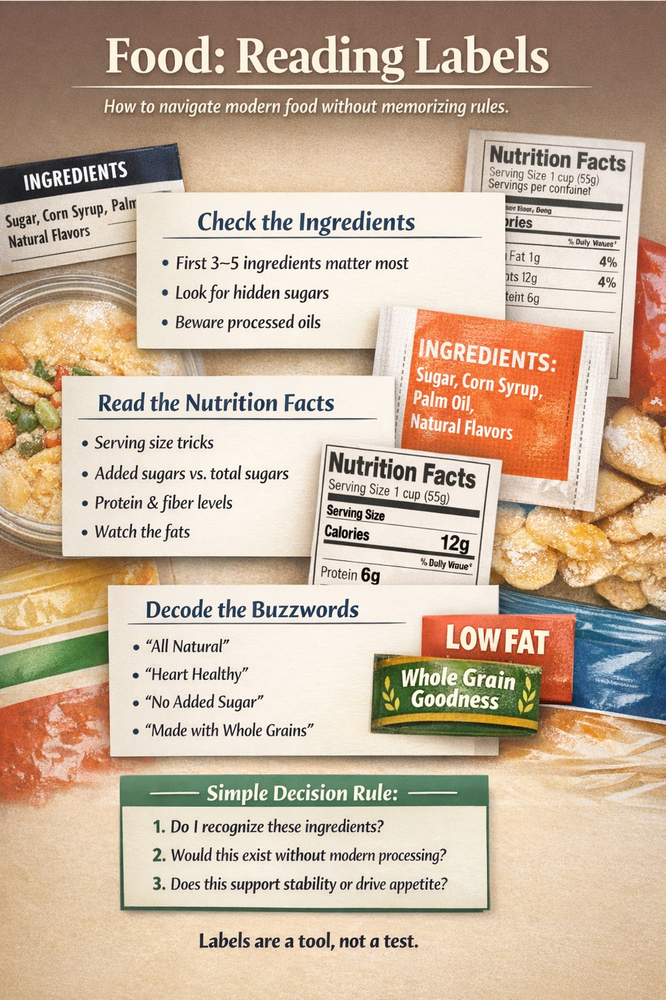

Building Better Food Habits: Understanding Food
Last updated: January 2026

- The front of the package is advertising. The ingredient list is the signal.
- Serving sizes can mislead—normalize to what you actually eat.
- Watch for sugar aliases and industrial oils; they often explain “why this feels addictive.”
- Use a simple framework instead of memorizing rules.
Purpose: Make grocery decisions easier in a modern food environment. You don’t need perfect knowledge—just a few reliable filters. Clarity compounds. So does confusion.
What labels are actually designed to do
Food labels are partly for compliance and partly for marketing. The front of the package is optimized to shape your attention: “high protein,” “heart healthy,” “made with,” “natural,” “keto,” “clean,” “plant-based.”
This doesn’t mean every claim is false. It means the package is trying to guide your focus—often away from what matters. If a product needs persuasion, that’s already information.
The ingredient list: your most honest signal
Ingredients are listed in descending order by weight. That single fact gives you more clarity than most nutrition debates. Look at the first 3–5 ingredients and ask: “Is this basically food, or is this a formulation?”
- Order matters: If sugar or refined starch is near the top, the product is built around it.
- Complexity matters: Long lists aren’t automatically “bad,” but they usually mean more processing.
- Ambiguity matters: Terms like “natural flavors” hide a lot behind a small phrase.
If you wouldn’t stock most of the ingredients in a normal kitchen, the product is likely engineered for shelf life and cravings. That’s not moral failure—it’s just a category.
Nutrition facts: what to notice (and what to ignore)
The nutrition panel can help, but it’s easy to get trapped in precision. Use it for a few high-signal checks, then move on.
- Serving size: Manufacturers can “shrink” numbers by shrinking the serving. Normalize to what you’ll actually eat.
- Added sugar: If it’s high, the product is often appetite-driving—even when it looks “healthy.”
- Protein relative to calories: More protein usually means more satiety and stability.
- Fiber: Fiber tends to signal less processing and smoother blood sugar impact.
What not to obsess over: tiny micronutrient percentages, “daily values,” and perfect macro ratios. Labels can create analysis paralysis.
Sugar, renamed and redistributed
Sugar often hides behind a family of names, and products may split sweeteners across several ingredients so no single one appears “first.”
- Alias problem: “Cane juice,” “syrup,” “concentrate,” “dextrose,” “maltodextrin,” and dozens more.
- Stacking problem: Multiple sweeteners in one item usually means it’s engineered for palatability.
- Liquid sugar problem: Sweet drinks and syrups move fast in the body and can destabilize appetite.
A practical rule: if the product is sweet and “healthy,” double-check the ingredient list and added sugar line.
Concentrated juice: why “100%” can still mislead
Juice concentrate is often marketed as a virtue—“100% juice” or “no added sugar”—but concentration is itself a form of processing. To make concentrate, water is removed and the remaining sugars are highly concentrated, then often reconstituted later.
The result behaves more like a liquid sugar than a whole fruit. Fiber is reduced or removed, chewing is bypassed, and sugars enter the bloodstream quickly. This can drive appetite, blood sugar swings, and overconsumption—especially in children.
- Concentrated ≠ whole: The structure of the fruit is lost, even if the source started as fruit.
- Marketing loophole: “No added sugar” can still mean a very high sugar load.
- Liquid problem: Liquids bypass normal satiety signals.
A simple rule: treat juice concentrate like sugar, not fruit. Whole fruit, diluted juice used sparingly, or water are usually more supportive of stability.
Fats and oils: the quiet differentiator
The total grams of fat matter less than the type of fat and the processing behind it. Many packaged foods rely on industrial oils because they’re cheap, shelf-stable, and consistent.
- Watch for: soybean oil, corn oil, canola/rapeseed oil, sunflower/safflower oil, “vegetable oil.”
- “Blends”: A vague oil blend usually means cost-optimization, not quality.
- Stable fats signal simplicity: butter, ghee, olive oil, coconut oil (context matters).
You don’t have to fear oils. Just recognize that oil choice often correlates with processing level—and with how “snackable” a product feels.
Reading egg cartons: a simple food literacy skill
Egg cartons include a small three-digit “Julian date” that shows the day of the year the eggs were packed. For example, 032 means February 1 and 200 means July 19. Eggs are usually at their best within a few weeks of this packing date.
Freshness also shows up immediately when cooking. High-quality or fresh eggs usually have a tall yolk and thick whites that stay close to the yolk. Older or lower-quality eggs spread thin and watery in the pan. Small observations like this help develop a practical understanding of food quality.
Olive oil labels: simple signals
Olive oil is another product where small label details matter. “Extra virgin” generally signals less processing than refined vegetable oils, but freshness and authenticity still vary widely.
- Harvest date: Oils closer to the harvest year are usually fresher.
- Single origin: Oils from a specific region or farm are easier to trace than generic blends.
- Flavor signal: Good olive oil often has a mild peppery or grassy taste when fresh.
You don’t need to become an expert. Simply choosing authentic olive oil instead of generic “vegetable oil” already improves the overall quality of many meals.
Claims, buzzwords, and health halos
Claims can be helpful, but they also create “health halos”—a feeling of safety that reduces scrutiny. A simple habit: treat claims as prompts to check the ingredient list, not as proof.
“Natural”
Often a marketing term. Your best check is still the ingredient list and oil/sugar profile.
“No added sugar”
May still be sweet due to concentrates or sugar alcohols. Check total carbs and ingredients.
“Made with whole grains”
“Made with” can mean a small amount. Look for whole grains near the top of ingredients.
A simple decision framework
Instead of memorizing rules, use a short checklist. You’ll make faster decisions with fewer regrets.
- Recognition: Do I recognize most ingredients as normal food?
- Processing: Would this exist without modern processing?
- Stability: Will this support steady energy—or drive appetite and cravings?
How this connects to Superfoods
One reason “superfoods” work is that many of them don’t need labels. Eggs, salt, fruit, vegetables, and real staples often come with no marketing claims—just food.
Labels are most useful when you’re choosing packaged versions of otherwise good ideas: bread, yogurt, sauces, snack foods, and “health” products. If you want practical examples, explore: Superfoods: Eggs and Superfoods: Salt.
When labels matter most (and least)
Labels matter most when the product is doing a lot of work: packaged snacks, sauces, bars, cereals, and “functional” foods. They matter least when the item is a single ingredient: eggs, potatoes, meat, fruit, vegetables, plain rice.
The goal isn’t perfection. It’s fewer bad surprises and better defaults.
Resources
- FDA: How to Understand and Use the Nutrition Facts Label
- FDA Food Labeling Guide (PDF)
- NIH Nutrition Facts Label Guide
- Nutrition.gov: Food Labels
- American Heart Association: Understanding Ingredients on Food Labels
Next steps
If you’re building resilience through food, start by learning how to recognize the two biggest drivers of processed foods: hidden sugars and industrial oils. That alone changes your grocery cart.
Next, explore practical examples of simple whole foods in Quality Nutrition articles.
Finally, move into the cooking side of the framework with Whole Food Cooking, where these ingredients become simple repeatable meals.
This article focuses on general food quality and practical decision-making, not medical advice.